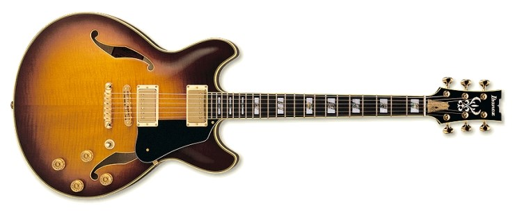

할로우바디
세미어쿠스틱 기타(Semi-acoustic guitar) 또는 할로우바디 일렉트로닉 기타(Hollow-body electric guitar)는 1930년대에 유래된 전기 기타의 종류이다. 사운드 박스와 하나 이상의 전기 픽업을 모두 갖추고 있다. 이것은 제조자나 플레이어가 추가한 픽업이나 다른 증폭 수단을 추가한 어쿠스틱 기타인 어쿠스틱 전자 기타와 같지 않다.1930년대에 기타 연주자들과 제작자들은 기타의 전체 볼륨을 높이려고 시도하고 있었는데 기타는 특히 대형 오케스트라와 재즈 밴드에서 다른 악기들과 경쟁하는 데에 어려움을 겪었다. 이로 인해 악기 제조업체들은 확성기를 통해 전기적으로 기타를 증폭시키는 데에 초점을 맞춘 일련의 디자인을 시도하게 되었다. 1936년에 깁슨은 전기 기타를 처음으로 생산했는데 ES-150s(Electric Spanish Series)로 알려진 이 기타들은 최초로 제작된 반음향 기타였다. 세미어쿠스틱 기타 중에서는 공명상자가 있는 것도 있지만 일반적으로 보다 얇은 기타들은 가운데 부분이 탄탄하고 옆면이 텅 빈 부분이 있어서 높은 소리에서도 피드백의 위험을 최소화할 수 있다. 이러한 기타들은 전신 전기 모델의 유연성과 기동성을 유지하면서 보다 따뜻하고 자연스러운 공명을 가진 소리를 만들어 내는 공통점을 갖고 있다.